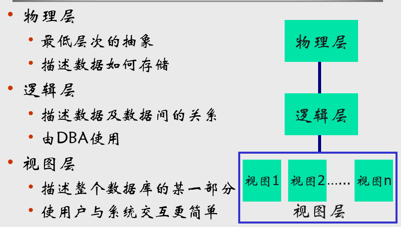

database-system-concepts-1
前言
期末92，大家分都比较高。期末试卷满分70，不进行折算，扣一分是一分，要珍惜。
基本概念
数据
数据(Data)是数据库中存储的基本对象
数据的定义
描述事物(对象)的符号记录
- 数据是现实世界运转留下的痕迹
数据的特点
数据与其语义是不可分的
数据库
数据库(Database,简称DB)是长期储存在计算机内、有组织的、可共享的大量数据集合
数据库的特征
- 数据按一定的数据模型组织、描述和储存
- 在磁盘上的基本组织形式是文件
- 可为各种用户共享
- 冗余度较小
- 数据独立性较高
- 易扩展
数据库管理系统
数据库管理系统(Database Management System，简称DBMS)由一个互相关联的数据的集合和一组用以访问这些数据的程序组成。是位于用户与操作系统之间的一层数据管理软件。
DBMS的目标
科学地组织和存储数据、高效方便地获取和维护数据
DBMS的主要功能
数据定义功能
- 提供数据定义语言(DDL)
- 定义数据库中的数据对象
数据操纵功能
- 提供数据操纵语言(DML)操纵数据
- 实现对数据库的基本操作 (查询、插入、删除和修改)
数据库的运行管理
- 保证数据的安全性、完整性
- 多用户对数据的并发使用
- 发生故障后的系统恢复
数据库的建立和维护功能
- 数据库数据批量装载
- 数据库转储
- 数据库的重组织
- 性能监视等
数据库系统
数据库系统(Database System，简称DBS)是指在计算机系统中引入数据库后的系统构成。在不引起混淆的情况下常常把数据库系统简称为数据库。
数据库系统的构成
由数据库管理系统(及其开发工具)、应用系统、数据库管理员(和用户)构成。
数据库系统的特点
- 面向全组织的复杂的数据结构
- 支持全组织机构应用而不是某一个应用
- 数据反映了客观事物间的本质联系，而不是着眼于面向某个应用，是有结构的数据。这是数据库系统的主要特征之一，与文件系统的根本差别。文件系统只是记录的内部有结构，一个文件的记录之间是个线性序列，记录之间无联系
- 数据的冗余度小，易扩充
- 数据面向整个企业，而不是面向某一应用，数据集中管理，数据共享，因此冗余度小
- 节省存储空间，减少存取时间，且可避免数据之间的不相容性和不一致性
- 每个应用选用数据库的一个子集，只要重新选取不同子集或者加上一小部分数据，就可以满足新的应用要求，这就是易扩充性
具有较高的数据和程序的独立性
- 将数据的管理工作从应用程序中分离出去
- 数据描述是分级的(全局逻辑、局部逻辑、存储)
- 数据的存取由系统管理，用户不必考虑存取路径等细节，从而简化了应用程序
统一的数据控制功能，数据共享程度高
数据的安全性控制(Security)
- 保护数据以防止不合法的使用所造成的数据泄露和破坏
- 措施：用户标识与鉴定，存取控制
数据的完整性控制(Integrity)
- 数据的正确性、有效性、相容性
- 措施：完整性约束条件定义和检查
并发控制(Concurrency)
- 对多用户的并发操作加以控制、协调，防止其互相干扰而得到错误的结果并使数据库完整性遭到破坏
- 措施：封锁
数据管理技术的产生与发展
什么是数据管理
对数据进行分类、组织、编码、存储、检索和维护，是数据处理的中心问题
数据管理技术的发展过程
- 人工管理阶段(40年代中–50年代中)
- 文件系统阶段(50年代末–60年代中)
- 数据库系统阶段(60年代末–现在)
- 大数据阶段(90年代–现在)
四个阶段
人工管理阶段
背景
计算机主要用于科学计算
数据量小、结构简单，如高阶方程、曲线拟和等
外存为顺序存取设备
磁带、卡片、纸带，没有磁盘等直接存取设备
没有操作系统，没有数据管理软件
用户用机器指令编码，通过纸带机输入程序和数据，程序运行完毕后，由用户取走纸带和运算结果，再让下一用户上机操作
特点
- 用户完全负责数据管理工作
- 数据的组织、存储结构、存取方法、输入输出等
- 数据完全面向特定的应用程序
- 每个用户使用自己的数据，数据不保存，用完就撤走
- 数据与程序没有独立性
- 程序中存取数据的子程序随着存储结构的改变而改变
文件系统阶段
背景
计算机不但用于科学计算，还用于管理
外存有了磁盘、磁鼓等直接存取设备
- 直接存取设备
- 无需顺序存取，由地址直接访问所需记录
- 直接存取设备
有了专门管理数据的软件，一般称为文件系统
- 文件存储空间的管理
- 目录管理
- 文件读写管理
- 文件保护
- 向用户提供操作接口
特点
系统提供一定的数据管理功能
- 存取方法(索引文件、链接文件、直接存取文件、倒排文件等)
- 支持对文件的基本操作(增、删、改、查等)，用户程序不必考虑物理细节
- 数据的存取基本上以记录为单位
数据仍是面向程序的
- 一个数据文件对应一个或几个用户程序
数据与程序有一定的独立性
- 文件的逻辑结构与存储结构由系统进行转换，数据在存储上的改变不一定反映在程序上
数据需要长期保存
数据库系统阶段
背景
计算机管理的数据量大，关系复杂，共享性要求强(多种应用、不同语言共享数据)
外存有了大容量磁盘，光盘
软件价格上升，硬件价格下降，开发和维护应用程序成本越来越昂贵
特点
有了数据库管理系统
面向全组织，面向现实世界
独立性较强
由DBMS统一存取，维护数据语义及结构
数据库观点
数据不是依赖于处理过程的附属品，而是现实世界中独立存在的对象
数据库系统与文件系统对比
- 数据的冗余和不一致
- 不同文件导致数据被多次存储以及因此导致的潜在的发生不一致的可能
- 数据访问困难
- 访问数据需要写程序
- 数据孤立
- 数据分散在不同文件
- 完整性问题
- 一致性约束难以实现
- 原子性问题
- 并发访问异常
- 安全性问题
大数据阶段
背景
存储设备容量不断增加，出现了云平台
CPU处理能力大幅提升
网络带宽不断增加
数据产生方式的变革
- 运行式系统阶段→用户原创阶段→感知式阶段
数据视图
数据抽象
逻辑层的简单结构的实现可能涉及到复杂的物理层，但逻辑层用户不必意识到这样的复杂性。称之为物理数据独立性。
数据库实例与模式
实例：特定时刻存储在数据库中的信息的集合称作数据库的一个实例
模式：数据库的总体设计称作数据库模式
两者之间的关系与区别，如编程语言型与值的区别
- 型是对数据的结构和属性的说明----模式
- 值是型的一个具体赋值 ----实例
- 型是相对稳定的，值是随时间不断变化的
三级模式与两级映像
三级模式
模式、外模式、存储模式三级模式。
模式
也称逻辑模式，是数据库中全体数据的逻辑结构和特征的描述，是所有用户的公共数据视图。
① 一个数据库只有一个模式；
② 是数据库数据在逻辑级上的视图；
③ 数据库模式以某一种数据模型为基础；
④ 定义模式时不仅要定义数据的逻辑结构（如数据记录由哪些数据项构成，数据项的名字、类型、取值范围等），而且要定义与数据有关的安全性、完整性要求，定义这些数据之间的联系。
外模式
也称子模式（Subschema）或用户模式，是数据库用户（包括应用程序员和最终用户）能够看见和使用的局部数据的逻辑结构和特征的描述，是数据库用户的数据视图，是与某一应用有关的数据的逻辑表示。
理解：
① 一个数据库可以有多个外模式；
② 外模式就是用户视图；
③ 外模式是保证数据安全性的一个有力措施。
内模式
也称存储模式（Storage Schema），它是数据物理结构和存储方式的描述，是数据在数据库内部的表示方式（例如，记录的存储方式是顺序存储、按照B树结构存储还是按hash方法存储；索引按照什么方式组织；数据是否压缩存储，是否加密；数据的存储记录结构有何规定）。
① 一个数据库只有一个内模式；
② 一个表可能由多个文件组成，如：数据文件、索引文件。 它是数据库管理系统(DBMS)对数据库中数据进行有效组织和管理的方法
其目的有：
① 为了减少数据冗余，实现数据共享；
② 为了提高存取效率，改善性能。
两级映像
外模式/模式映象
- 定义某一个外模式和模式之间的对应关系，映象定义通常包含在各外模式中
模式/内模式映象
- 定义数据逻辑结构与存储结构之间的对应关系
数据独立性
物理数据独立性
- 存储结构改变时，修改模式/内模式映象，使模式保持不变，从而应用程序可以保持不变，称为数据的物理独立性
逻辑数据独立性
- 当模式改变时，修改外模式/模式映象，使外模式保持不变，从而应用程序可以保持不变，称为数据的逻辑独立性
数据模型
定义
数据模型是一个描述数据、数据联系、数据语义以及一致性约束的概念工具的集合。
要求
比较真实的模拟现实世界
容易为人所理解
便于在计算机上实现
四类数据模型
关系模型：用表的集合表示数据和数据之间的关系。表也被称为关系。
- 是一种基于记录的模型。是使用最广泛的数据模型。
实体-联系模型（E-R模型）：现实世界是由实体和实体之间的联系构成的，用于数据库设计。
基于对象数据模型：实体-联系模型增加了封装、方法和对象标识的扩展。
半结构化数据模型：半结构化数据模型允许相同类型的数据项含有不同的属性集。
- JSON和XML被广泛用于表示半结构化数据
关系模型
优点
简单，表的概念直观、单一，用户易理解
非过程化的数据请求，数据请求可以不指明路径
数据独立性，用户只需提出“做什么”，无须说明“怎么做”
坚实的理论基础
数据模型的组成要素
数据结构
数据结构，即对象类型的集合，是对系统静态特性的描述。
- 两类对象
- 与数据类型、内容、性质有关的对象
- 与数据之间联系有关的对象
数据操作
对数据库中各种对象(型)的实例(值)允许执行的操作及有关的操作规则
数据操作的类型：
检索
更新(包括插入、删除、修改)
数据模型对操作的定义
操作的确切含义
操作符号
操作规则(如优先级)
实现操作的语言
数据的约束条件
一组完整性规则的集合。
完整性规则是给定的数据模型中数据及其联系所具有的制约和储存规则，用以限定符合数据模型的数据库状态以及状态的变化，以保证数据的正确、有效、相容。
数据模型对约束条件的定义
反映和规定本数据模型必须遵守的基本的通用的完整性约束条件。
- 例如在关系模型中，任何关系必须满足实体完整性、参照完整性和用户自定义的完整性。
提供定义完整性约束条件的机制，以反映具体应用所涉及的数据必须遵守的特定的语义约束条件。
数据库语言
DDL语言(Data Definition Language
描述子模式、逻辑模式、物理模式
数据库定义功能
模式翻译程序
- 把源模式翻译成目标模式，存入数据字典中
以执行约束定义
DCL语言(Data Control Language)
- 数据库的安全控制功能
DML语言(Data Manipulation Language)
- 对数据库进行检索、插入、修改、删除
- 数据存取功能
- DML类型
- 过程化DML
- WHAT AND HOW
- 声明式(非过程化)DML
- WHAT，NO HOW
- 实例----SQL
- 过程化DML
DDL实现完整性约束（book p9）
- 约束域（
domain constraint）：每个属性必须对应一个所有可能的取值构成的域。相当于约束它可以取的值。是完整性约束的最基本形式。 - 引用完整性（
referential integrity）：我们希望能确保一个关系中给定属性集上的取值也在另一关系的某一属性集的取值中出现。 - 授权（
authorization）：对用户加以区别（权限）
DDL的输出放在数据字典中，数据字典包含元数据（关于数据的数据）在读取和修改实际的数据前，数据库系统要先参考数据字典。
数据库引擎
存储管理器
存储管理器是一个程序模块，提供了数据库中存储的低层数据与应用程序以及向系统提交的查询之间的接口
组成
- 权限及完整性管理器。
- 检测完整性约束与用户权限
- 事务管理器
- 保证并发事务不冲突，保证数据库状态正确
- 文件管理器
- 管理存储空间分配
- 缓冲区管理器
- 将数据从磁盘读取到内存，并决定哪些数据应被缓冲存储在内存
存储管理器的任务
与文件管理器交互
对数据的有效的存储、查询和更新
实现的数据结构：
数据文件
数据字典
- 存储数据库结构的元数据
索引
- 提供针对数据项的快速访问
查询处理器
组成
- DML解释器
- 解释DML语句并记录在数据字典中
- DML编译器
- 查询语言中的DML语句并翻译为包括一系列查询执行引擎能理解的低级指令的执行方案
- 进行查询优化：
- 一个查询通常可被解释成多种等价的具有相同结果的计算方案，DML编译器进行查询优化，从几种选择中选出代价最小的一种
- 查询执行引擎
- 执行DML编译器产生的低级指令
事务管理
事务是由一系列操作序列构成的程序执行单元，这些操作要么都做，要么都不做，是一个不可分割的工作单位。
特性
原子性(Atomicity)
- 事务中包含的所有操作要么全做，要么全不做
- 原子性由恢复机制实现
一致性(Consistency)
- 事务的隔离执行必须保证数据库的一致性
- 事务开始前，数据库处于一致性的状态；事务结束后，数据库必须仍处于一致性状态
- 数据库的一致性状态由用户来负责，由并发控制机制实现
- 事务运行过程中允许暂时的不一致
隔离性(Isolation)
系统必须保证事务不受其它并发执行事务的影响
- 对任何一对事务T1，T2，在T1看来，T2要么在T1开始之前已经结束，要么在T1完成之后再开始执行
隔离性通过并发控制机制实现
持久性(Durability)
- 一个事务一旦提交之后，它对数据库的影响必须是永久的
- 系统发生故障不能改变事务的持久性
- 持久性通过恢复机制实现